My name's William Guo.
I go by Will.
I'm a Senior Software Engineer at Level Data on the Birdies team, and I live in Boston.
Come chat about anything. I love hearing about trips, restaurants, the mundane parts of life, and of course the fun parts.
-
Queens, NY
Where I grew up. Best food in all the land (the USA, anyway). I'll die on this hill.
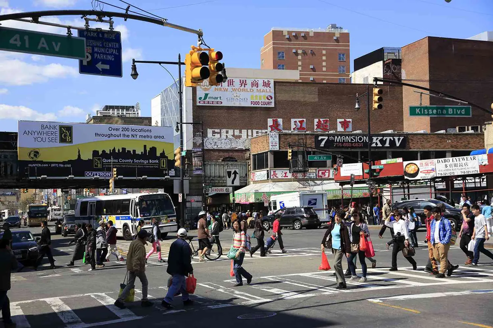
-
Northeastern University
Where I went to school. Go co-ops!
-
Boston
Where I am now. Please enjoy this image of a cursed object.
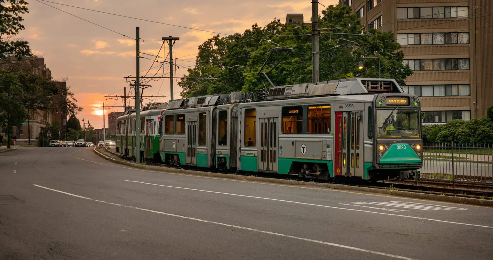
Can you hear this image? I can. The best dish in Boston, in my opinion, is at Yume Ga Arukara. If you disagree, I want you to know it's okay to be wrong.
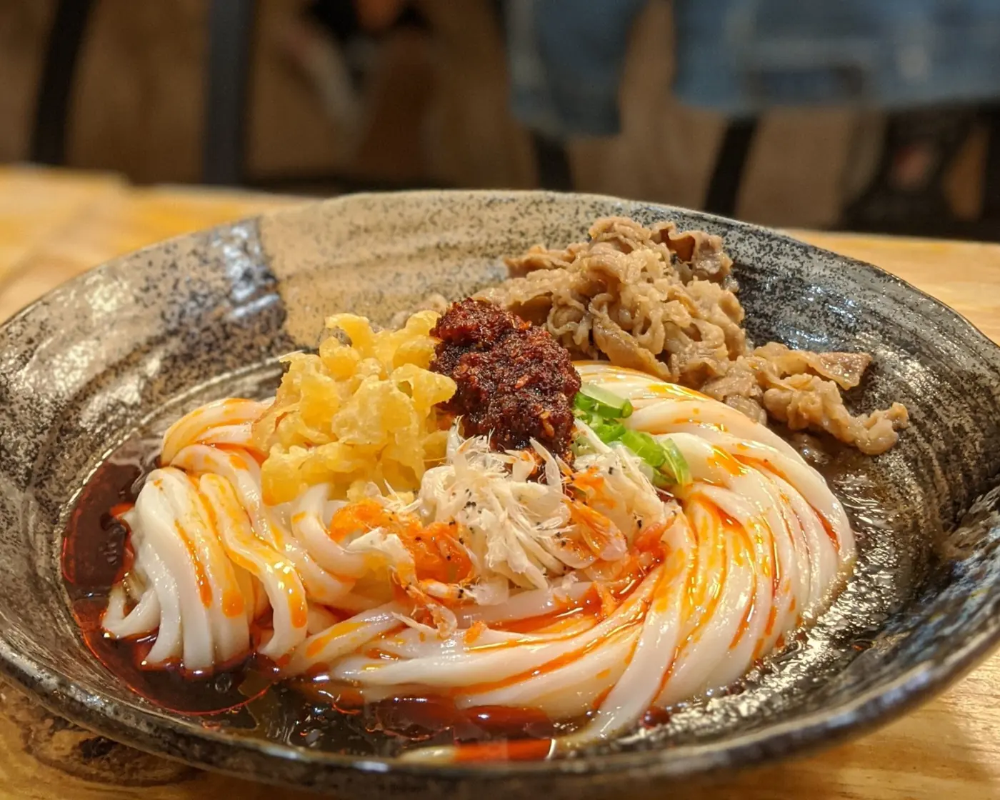
-
Things I like to do
I run (NYC marathons coming up!), hike (12 of the 48 New Hampshire 4,000-footers so far), camp, and play video games. If you need help planning a trip to NYC, definitely reach out.
New this year: sunflowers
I've been growing sunflowers this year. The bees are big fans.
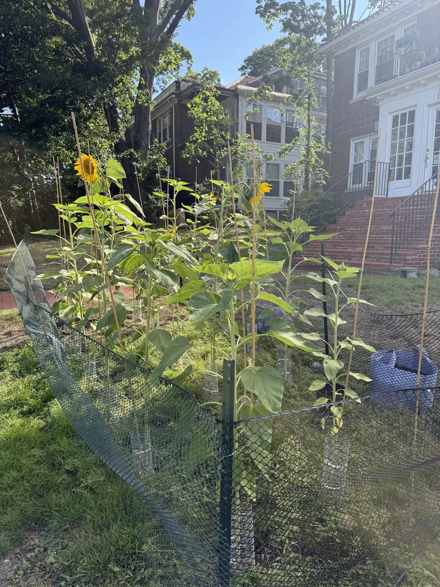
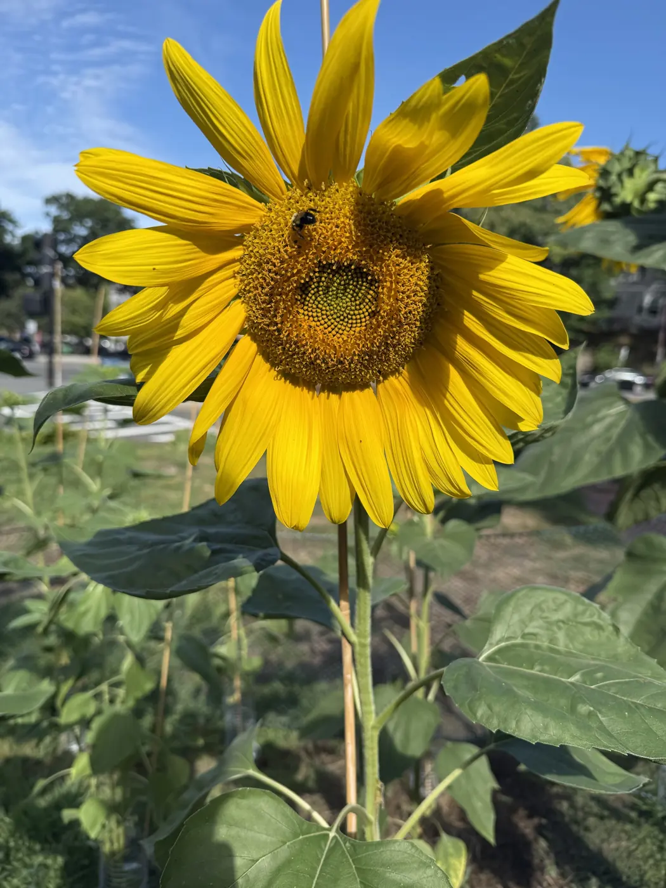
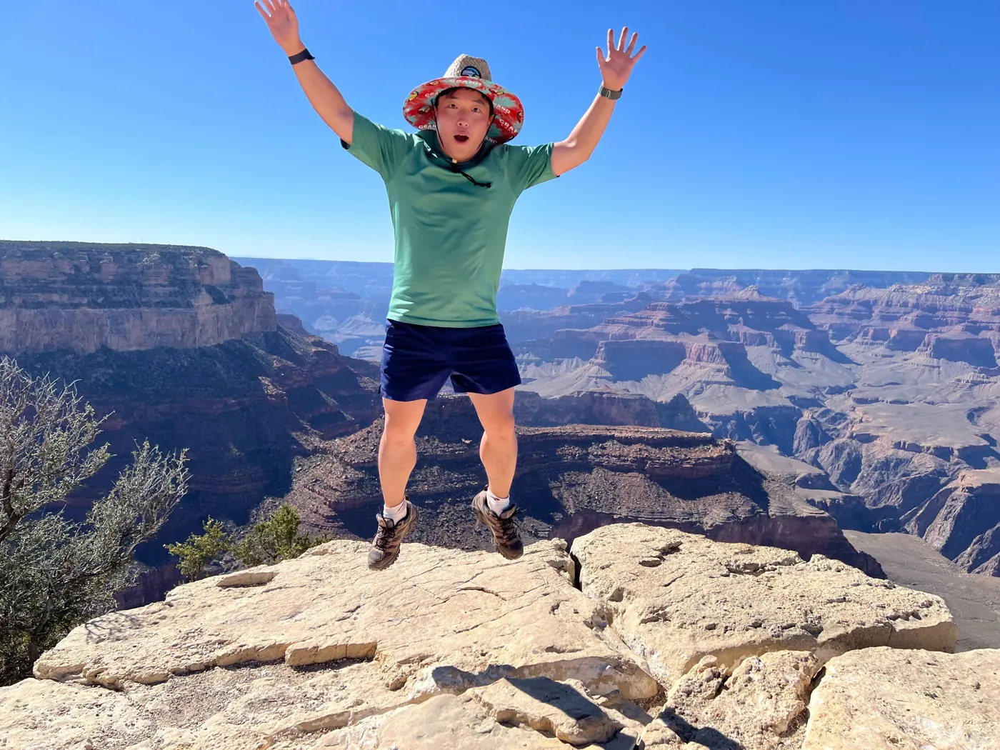
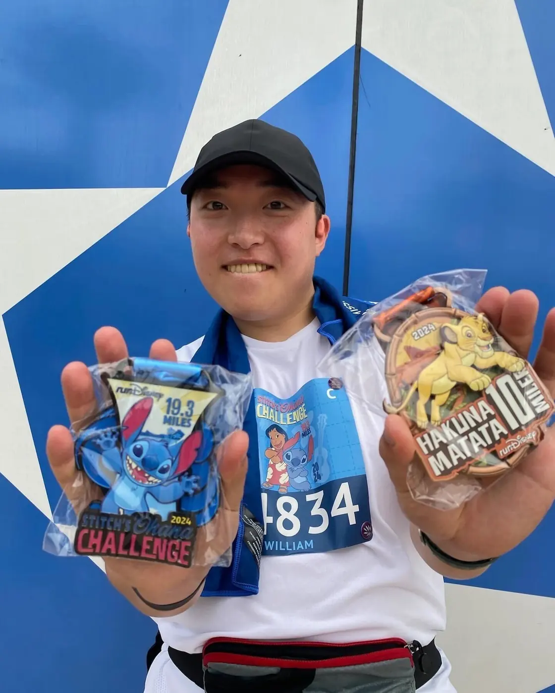
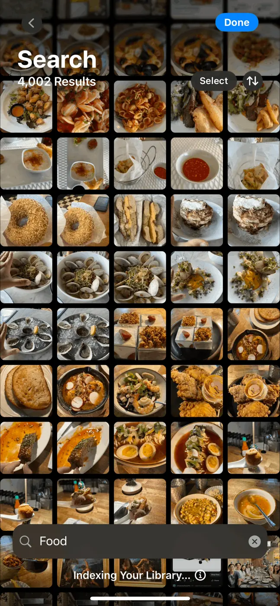
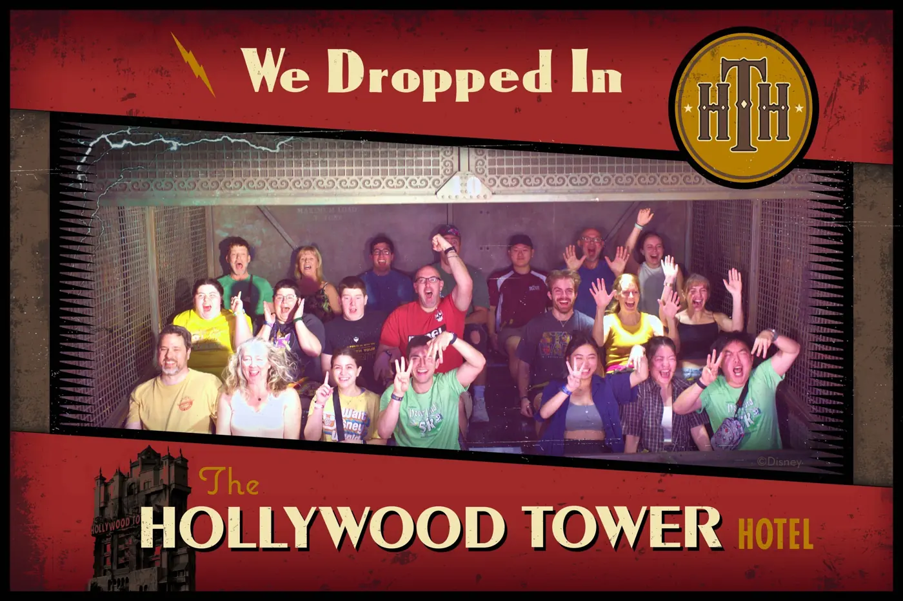
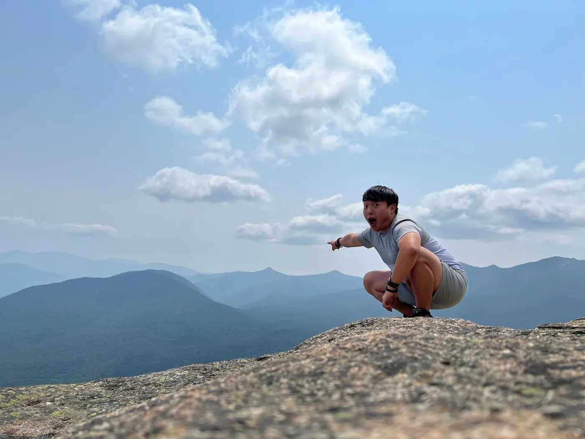
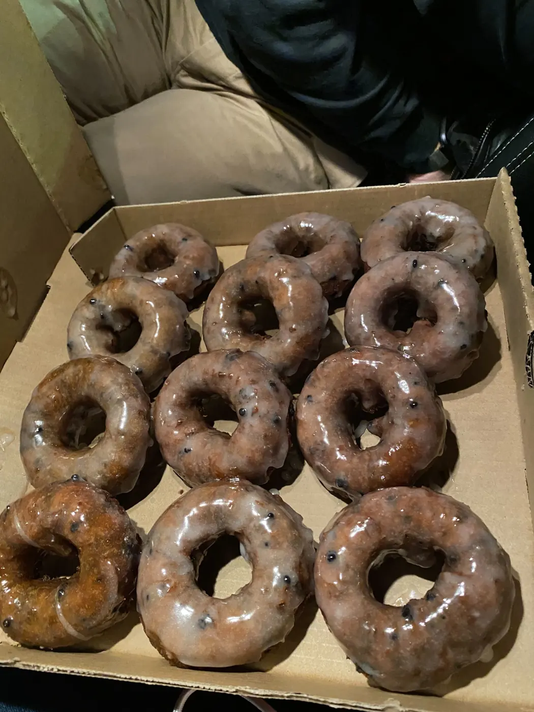
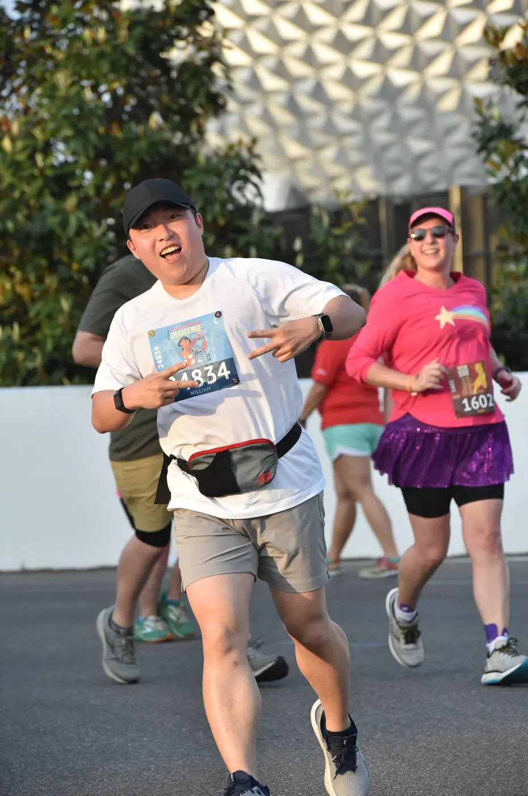
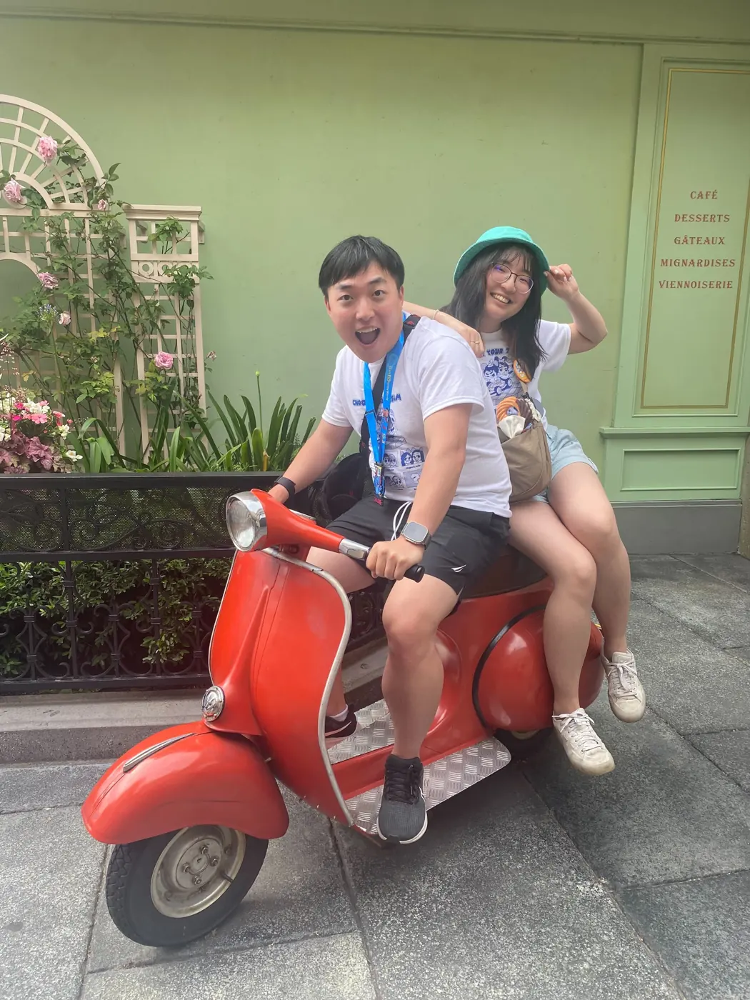
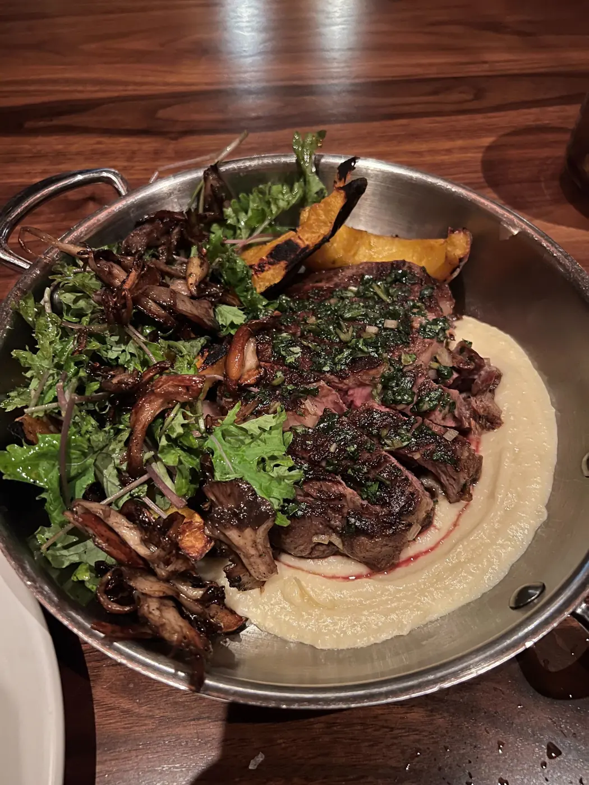
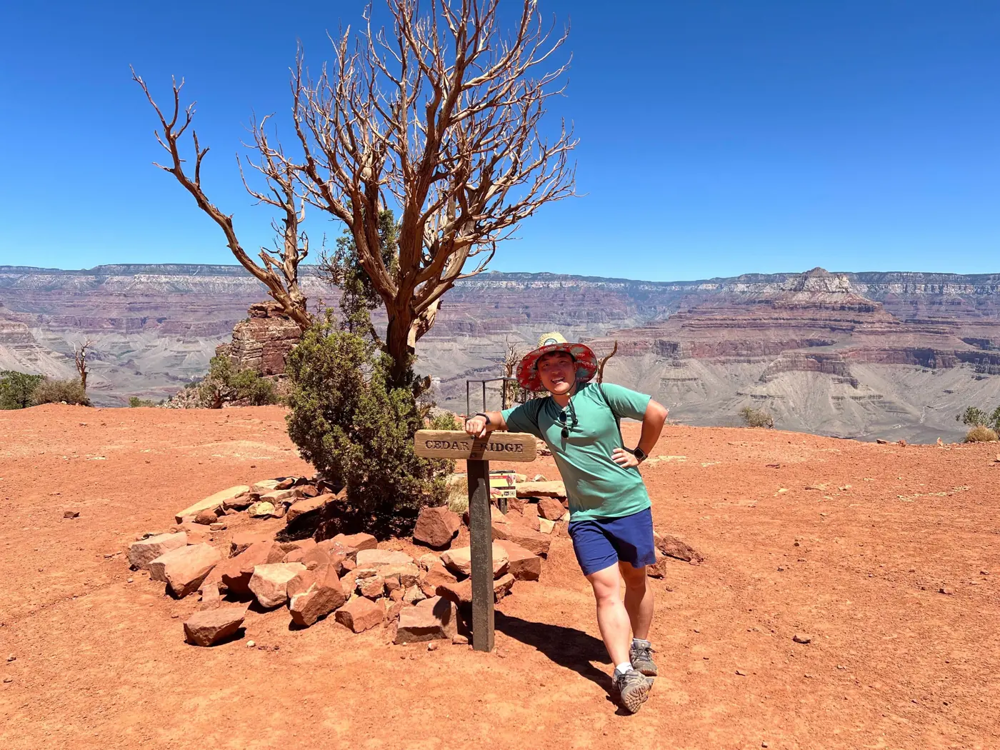